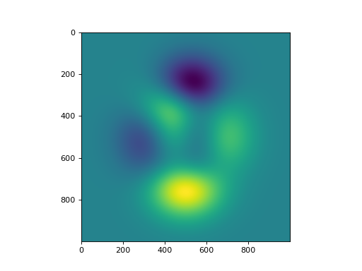

Miscellaneous¶
Miscellaneous functions.
Miscellaneous functions.
|
Check if two shapes satisfy Numpy’s broadcasting rules. |
|
Given two shapes, determine broadcasting shape. |
|
Matlab 2D peaks function. |
-
is_range_broadcastable(shape1: Tuple[int, int], shape2: Tuple[int, int]) → bool[source]¶ Check if two shapes satisfy Numpy’s broadcasting rules.
- Parameters
- Returns
Trueif broadcastable,Falseotherwise.- Return type
Examples
>>> is_range_broadcastable((3,2), (1,2)) True >>> is_range_broadcastable((3,2), (4,2)) False
-
range_broadcast_shape(shape1: Tuple[int, int], shape2: Tuple[int, int]) → Tuple[int, int][source]¶ Given two shapes, determine broadcasting shape.
- Parameters
- Returns
Broadcasting shape.
- Return type
- Raises
ValueError – If the two shapes cannot be broadcasted.
Examples
>>> range_broadcast_shape((3,2), (1,2)) (3, 2)
-
peaks(x: numpy.ndarray, y: numpy.ndarray) → numpy.ndarray[source]¶ Matlab 2D peaks function.
Peaks is a function of two variables, obtained by translating and scaling Gaussian distributions (see Matlab’s peaks function <https://www.mathworks.com/help/matlab/ref/peaks.html>). This function is useful for testing purposes.
- Parameters
x (np.ndarray) – X coordinates.
y (np.ndarray) – Y coordinates.
- Returns
Values of the 2D function
peaksat the points specified by the entries ofxandy.- Return type
np.ndarray
Examples
import numpy as np import matplotlib.pyplot as plt from pycsou.util.misc import peaks x = np.linspace(-3,3, 1000) X,Y = np.meshgrid(x,x) Z = peaks(X,Y) plt.figure() plt.imshow(Z)
(Source code, png, hires.png, pdf)

{kind=link}
{kind=link}